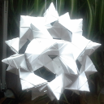
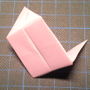
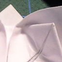
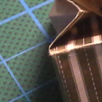

Basteln
Meistens Papier (Origami...)
Weihnachtsfalten 2018
28.12.2018

Es ist wieder einmal Zeit für Origami
Origami Würfel
14.02.2016

Hier meine Erfolge beim Basteln eines Origami-Würfels. Ursprünglich war ich auf der Suche nach einer Anleitung für den tamatebako, fand dann aber heraus, dass man dazu schneiden muss, was ich bei meinen grobmotorischen Origami-Versuchen ja strikt ablehne.
Handtuchtiere
31.01.2016
Nachdem ich neulich wieder einmal alte Geschichten von meiner ersten Kreuzfahrt erzählt habe, habe ich mich an viele Dinge erinnert, an die ich nicht mehr tagtäglich denke- darunter die Überraschung, die uns jedesmal beim Betreten unserer Kabine erwartete...
Seerosen falten
16.01.2016

Aus aktuellem Anlass rausgekramt: Seerosen Level 1 und 2: Level 1 - Servietten, Level2: relativ hartes Papier.
Pultordner (naja - fast!) selbstgebaut
19.12.2015

Hier noch eine schöne Aufbewahrungsidee in Form eines Pultordners
Ältere Artikel
Hier geht es zum Archiv der Artikel, die vor dem 14.11.2015 verfasst wurden:
- Schachtel und Deckel - sechseckig
- Sechseckige Box aus zwei Segmenten
- ...


Tags
Manche nennen es Blog, manche Web-Seite - ich schreibe hier hin und wieder über meine Erlebnisse, Rückschläge und Erleuchtungen bei meinen Hobbies.
Wer daran teilhaben und eventuell sogar davon profitieren möchte, muß damit leben, daß ich hin und wieder kleine Ausflüge in Bereiche mache, die nichts mit IT, Administration oder Softwareentwicklung zu tun haben.
Ich wünsche allen Lesern viel Spaß und hin und wieder einen kleinen AHA!-Effekt...
PS: Meine öffentlichen GitHub-Repositories findet man hier.